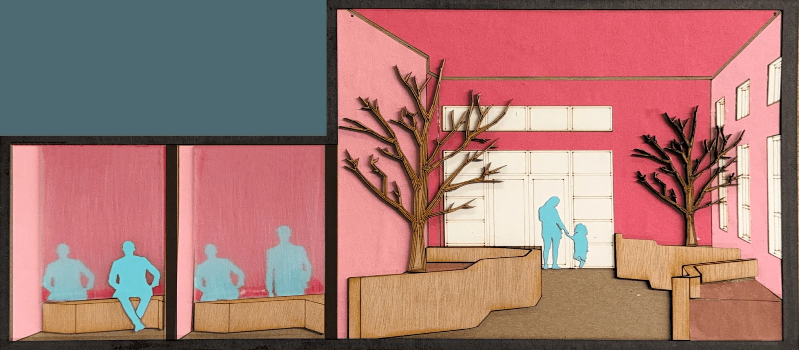
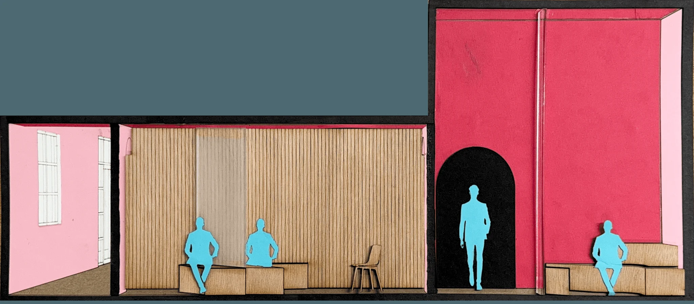
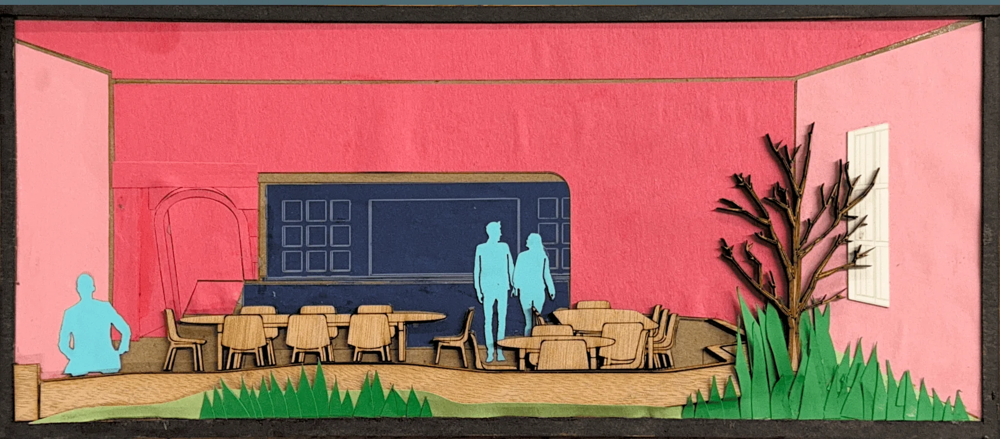
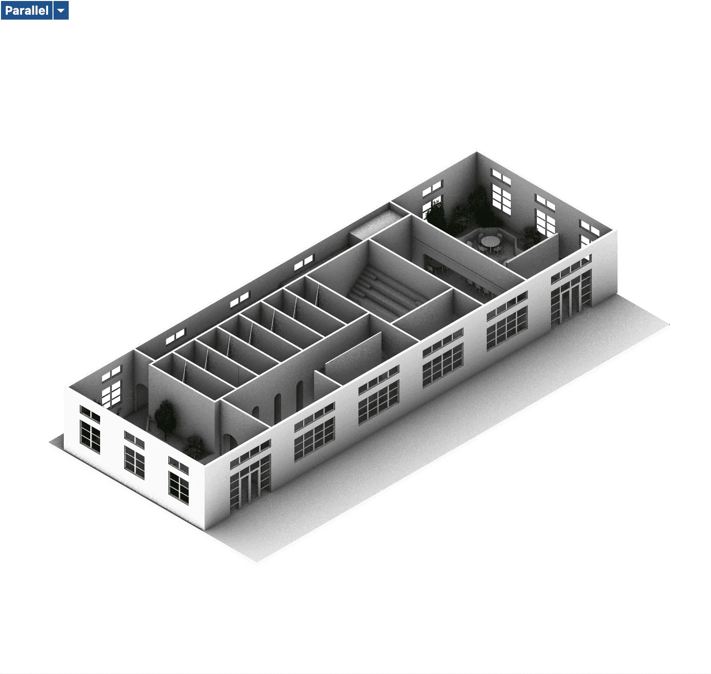
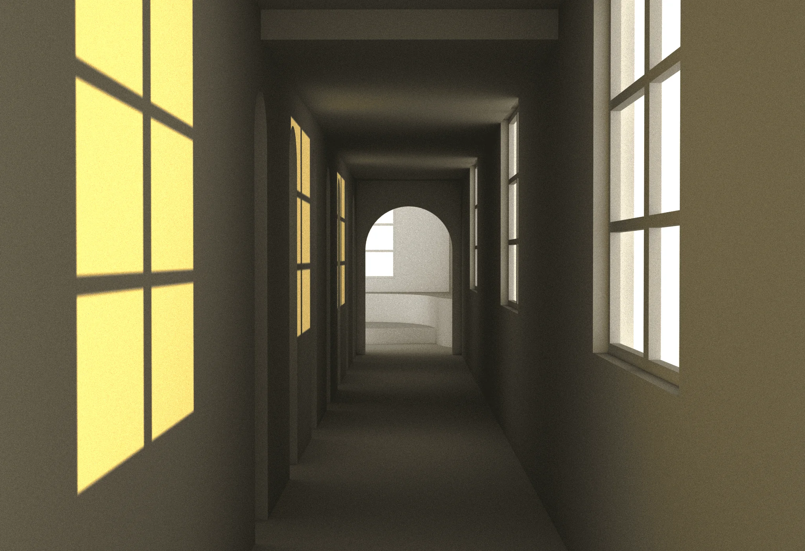

Balance
An interior study moving between shared space and private reflection.
- Year
- 2026
- Status
- In progress
- Context
- Studio II · Interior design
- Tools
- Rhino 3D · Adobe Suite

Between shared space
and private reflection.
Balance is an ongoing interior design project for a cause-driven brand headquarters. The proposal explores a therapy-centered environment through a sequence of communal and private spaces.
The concept moves from a tea bar into intimate confession rooms, then toward an open meditation and yoga studio before returning to a shared setting. Changes in privacy and atmosphere organize the experience around reflection, release, and reconnection.
Drawing
the experience.
Collaged section perspectives explore spatial depth, atmosphere, and the relationship between shared and private areas. Digital models develop the arrangement of the interior.








An ongoing
Studio II exploration.
The project remains in development. These studies document the current direction for the space, with further refinement of its layout and atmosphere to follow.